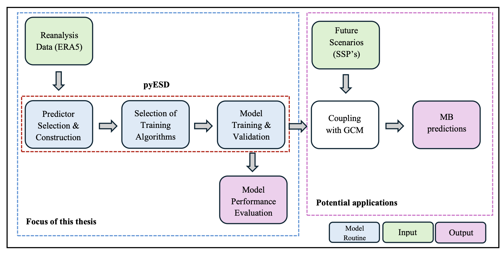

Master Thesis
"Detection and Explanation of Regime Shifts in the Climatic Controls of Norwegian Glaciers"
Institution: University of Glasgow, School of Geographical and Earth Sciences
Supervisor: Dr. rer. nat. habil. Sebastian G. Mutz
Research Cluster: Climate Dynamics Lab
Aim:
- Detect & explain regime shifts in glacier–climate relationships (pre-2000 vs post-2000).
- Develop an empirical-statistical model framework for glacier mass balance.
Hypothesis:
"The turn of the century marks the transition to a new glacier regime, characterized by a change in the climatic controls on annual mass balances.
Figure: Drastic decrease in Mass balance post-2000

Cumulative Ba (m w.e.) for 11 Norwegian glaciers from 1950 to 2020. The dashed vertical line at the year 2000 indicates a marked acceleration in cumulative mass loss for most glaciers after 2000. This shows a transition toward increasingly negative mass balance regimes for all 11 glaciers in the 21st century.
Methods:
Data sources: ERA5 reanalysis (ECMWF), CMIP6 projections, and glacier mass-balance observations (NVE: Norwegian Water Resources and Energy Directorate).
Part A:
- Exploratory data analysis of glacier mass-balance time series (1950–2023).
- Empirical Orthogonal Function (EOF) analysis to identify dominant modes of variability (e.g., NAO, EA, SCAN).
- Detection of regime shifts using correlation testing and comparing pre-2000 & post-2000 periods.
Part B:
- Predictor selection followed by training and testing different models with cross-validation.
- Empirical-Statistical Downscaling via a
pyESDbased ML framework with 6 regressor (ARD, RidgeCV, RandomForest, Bagging, Stacking) & 3 selector (Recursive, Tree-Based, Sequential) techniques. - Model evaluation using cross-validation and performance metrics (e.g., RMSE, R²).
Figure: Schematic of the modelling routine
Predictors are constructed from ERA5 datasets to generate Empirical-statistical models & their metrics. The resulting model’s performance for each mass balance component is evaluated using the defined metrics to identify any significant patterns. The best performing model(s), individually or in an ensemble, can be coupled with a GCM to make future predictions. Data Sources: Mass balance [NVE] & ERA5 Reanalysis [ECMWF]
Results & Findings:
Part A:
- Identified a major regime shift around 2000 for most glaciers.
- Post-2000 shift in regime: from winter (bw) → summer (bs) dominated control.
- Shift from winter precipitation (NAO) → temperature-dominant controls on glacier mass balance.
- Spatial gradient: maritime glaciers (↑ precipitation sensitive) & continental glaciers (↑ temperature sensitive).
Weaker NAO (↓ P(acc)) + higher T(abl) → MOST NEGATIVE BALANCE ON RECORD POST-2000!
Part B:
- Model type: Linear (ARD, RidgeCV, BYR) ≥ non-linear models (Bag, RF, XGBoost).
- Dataset size: More complete records pre-2000 → better predictive skill.
- Spatial gradient: maritime glaciers (↑ performance) & continental glaciers (↓ performance).
Incorporate proxy data + robust dataset → Improved model performance
Figure: Scatterplot displaying the Regime Shift in Glaciers

(a) Scatterplots displaying the Pearson correlation of Ba with Bw (pre-2000) & with Bs (post- 2000). (b) Scatterplot displaying the correlation of Ba with Bs & Bs (post-2000). The plot outlines the seasonal shift in the mass balance control. A general shift from a Bw dominated mass balance regime to a Bs dominated regime is observed for 9 out of 11 glaciers post 2000. Ba of some glaciers continues to be controlled by Bw post-2000.